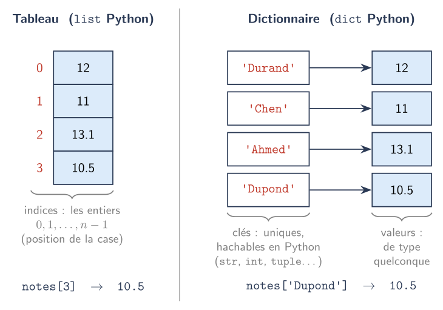
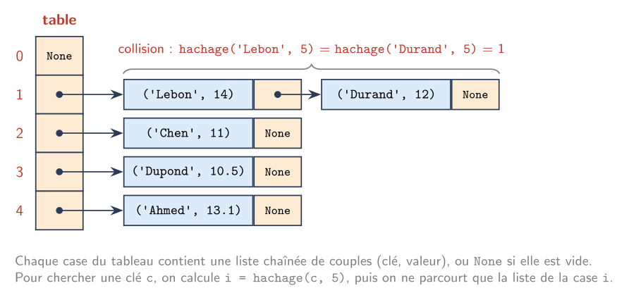

📖 Cours Dictionnaires⚓︎
Objectifs de la séance
Programme de Terminale, rubrique « Structures de données » (BO spécial n° 8 du 25 juillet 2019) :
- Dictionnaires, index et clé : distinguer la recherche d'une valeur dans une liste et dans un dictionnaire ; choisir une structure de données adaptée à la situation à modéliser.
- Structures de données, interface et implémentation : spécifier une structure de données par son interface ; distinguer interface et implémentation ; écrire plusieurs implémentations d'une même structure de données.
Prérequis : les dict Python (classe de première), le cours sur les listes chaînées (C6C1), la programmation objet (chapitre V).
0. 🔎 Chercher : combien ça coûte ?⚓︎
On compare trois recherches d'un élément absent (le pire cas), pour des tailles n qui doublent.
1 2 3 4 5 6 7 8 9 10 11 12 13 14 15 16 17 18 19 20 21 22 | |
À faire
- Exécuter le programme et relever les durées, en secondes. Python peut afficher une très petite durée en notation scientifique :
9e-06signifie \(9 \times 10^{-6}\) s. - Quand
ndouble, par combien est multipliée chacune des trois durées ? absent in Detabsent in D.values()portent sur le même dictionnaire. Pourquoi leurs durées sont-elles si différentes, à votre avis ?
Ce qu'il faut en retenir
- Chercher une valeur dans un tableau impose de le parcourir : la durée double quand
ndouble. Le coût est en \(\mathcal{O}(n)\). - Chercher une clé dans un dictionnaire prend un temps qui ne dépend presque pas de
n: on dit que le coût est constant en moyenne, en \(\mathcal{O}(1)\). - Chercher une valeur dans un dictionnaire impose, comme pour le tableau, de tout parcourir : \(\mathcal{O}(n)\).
👉 Un dictionnaire n'est rapide que pour retrouver une valeur à partir de sa clé. Ce cours explique pourquoi.
1. 📚 Le type abstrait Dictionnaire⚓︎
1.1 Définition⚓︎
Définition
Un dictionnaire (ou tableau associatif) est un ensemble de couples (clé, valeur) dans lequel chaque clé apparaît au plus une fois. On accède à une valeur par sa clé.
Le dictionnaire généralise le tableau. Dans un tableau, on accède à une valeur par son indice, un entier entre \(0\) et \(n-1\) imposé par la position de la case. Dans un dictionnaire, on accède à une valeur par une clé qu'on choisit librement : une chaîne, un nombre, un couple…

Les quatre couples du dictionnaire sont dessinés séparément : contrairement aux cases d'un tableau, ils ne sont pas rangés dans un ordre imposé.
Un dictionnaire n'est pas ordonné
Au niveau du type abstrait, un dictionnaire n'a pas d'ordre : c'est un ensemble de couples. En Python, depuis la version 3.7, un dict conserve l'ordre d'insertion de ses clés, mais c'est une propriété de l'implémentation Python, pas du type abstrait. Un algorithme sur les dictionnaires ne doit pas en dépendre.
Exemples d'utilisation : un annuaire (nom ↦ numéro de téléphone), le décompte des mots d'un texte (mot ↦ nombre d'apparitions), un lexique (mot français ↦ mot créole), les notes d'une classe (nom ↦ moyenne).
1.2 Interface⚓︎
| Opération | Rôle | Précondition |
|---|---|---|
dico_vide() |
renvoie un dictionnaire vide | — |
contient(D, c) |
renvoie True si la clé c est présente dans D |
— |
valeur(D, c) |
renvoie la valeur associée à la clé c |
c présente |
ajouter(D, c, v) |
ajoute le couple (c, v) à D |
c absente |
modifier(D, c, v) |
associe la nouvelle valeur v à la clé c |
c présente |
supprimer(D, c) |
retire de D la clé c et sa valeur |
c présente |
cles(D) |
renvoie les clés de D, dans un ordre quelconque |
— |
Un type abstrait mutable
Les opérations ajouter, modifier et supprimer modifient le dictionnaire D ; elles ne renvoient rien. C'est le même choix que pour la pile et la file du chapitre IV, et le contraire de l'interface du TAD Liste (C6C1), où cons et queue renvoient une nouvelle liste.
Pourquoi une opération contient ?
On pourrait imaginer que valeur(D, c) renvoie None quand la clé est absente. Mais alors, comment distinguer une clé absente d'une clé présente dont la valeur est None ? Avec une précondition sur valeur et une opération contient, il n'y a plus d'ambiguïté : on vérifie d'abord, puis on lit.
1.3 Interface et implémentation : trois niveaux⚓︎
On retrouve les trois niveaux des chapitres IV et VI :
| Niveau | Question | Pour le dictionnaire |
|---|---|---|
| TAD | Que peut-on faire ? | l'interface du 1.2 |
| Structure de données | Comment range-t-on les couples en mémoire ? | une liste chaînée de couples (2.1), ou une table de hachage (2.2) |
| Implémentation | Comment écrit-on les opérations en Python ? | dico_liste.py (2.1), le type dict de Python (2.2) |
1.4 Le type dict de Python⚓︎
Python fournit le dictionnaire comme type de base, avec sa propre syntaxe :
| Interface (1.2) | En Python | Remarque |
|---|---|---|
dico_vide() |
D = {} |
|
contient(D, c) |
c in D |
|
valeur(D, c) |
D[c] |
lève une erreur KeyError si c est absente |
ajouter(D, c, v) |
D[c] = v |
la même instruction ajoute ou modifie : Python ne vérifie pas la précondition |
modifier(D, c, v) |
D[c] = v |
|
supprimer(D, c) |
del D[c] |
lève une erreur KeyError si c est absente |
cles(D) |
D.keys() ou for c in D: |
Python propose aussi len(D) (nombre de couples), D.values() (les valeurs), D.items() (les couples) et D.get(c, defaut), qui renvoie defaut si c est absente.
Un usage typique : compter des occurrences
1 2 3 4 5 6 7 8 9 | |
1 2 | |
Chaque tour de boucle fait une recherche de clé, en \(\mathcal{O}(1)\) en moyenne : le comptage de \(n\) mots coûte \(\mathcal{O}(n)\) en moyenne. Avec un tableau de couples [mot, nombre], chaque recherche coûterait \(\mathcal{O}(n)\), et le comptage \(\mathcal{O}(n^2)\).
2. 🔗 Deux implémentations du dictionnaire⚓︎
2.1 🌿 Avec une liste chaînée de couples⚓︎
On réutilise la classe Cellule du cours C6C1 : chaque cellule contient un couple (clé, valeur). Comme pour la classe Liste (C6C1, 2.3), une classe Dico encapsule la référence vers la première cellule, ce qui permet aux opérations de modifier le dictionnaire.
Fichier dico_liste.py :
1 2 3 4 5 6 7 8 9 10 11 12 13 14 15 16 17 18 19 20 21 22 23 24 25 26 27 28 29 30 31 32 33 34 35 36 37 38 39 40 41 42 43 44 45 46 47 48 49 50 51 52 53 54 55 56 57 58 59 60 61 62 63 | |
1 2 3 4 5 6 7 8 9 10 11 | |
Complexité
Toutes les opérations, sauf dico_vide, commencent par chercher la clé en parcourant la liste depuis la tête : elles coûtent \(\mathcal{O}(n)\) dans le pire cas pour un dictionnaire de \(n\) couples. Même ajouter est en \(\mathcal{O}(n)\), car il faut vérifier que la clé est absente.
Les cellules sont modifiées en place
modifier et supprimer changent des cellules existantes. Au cours C6C1 (4.2), on a vu que c'est dangereux si des cellules sont partagées. Ici, elles ne le sont jamais : seule la classe Dico y accède.
2.2 ⚡ Avec une table de hachage⚓︎
Hors programme : pour comprendre, pas à savoir refaire
Le programme ne mentionne pas les tables de hachage. Cette partie explique pourquoi le dict de Python recherche une clé en temps constant en moyenne. Le vocabulaire et le principe sont à comprendre ; ils ne sont pas exigibles à l'examen.
L'implémentation 2.1 est lente parce qu'il faut parcourir tous les couples. L'idée d'une table de hachage est de répartir les couples dans \(M\) petites listes chaînées, et de savoir directement dans laquelle chercher.
- On utilise un tableau de \(M\) cases. Chaque case contient une liste chaînée de couples (clé, valeur), ou
Nonesi elle est vide. - Une fonction de hachage associe à chaque clé un indice entre \(0\) et \(M-1\) : la case où ranger le couple.
- Deux clés différentes peuvent avoir le même indice : c'est une collision. Les deux couples sont alors dans la même liste chaînée. On parle de résolution des collisions par chaînage.
Voici une fonction de hachage simple pour des clés de type chaîne :
1 2 3 4 5 6 | |
Avec \(M = 5\), on range les cinq couples ('Durand', 12), ('Chen', 11), ('Ahmed', 13.1), ('Dupond', 10.5) et ('Lebon', 14), chacun ajouté en tête de la liste de sa case :

On reconnaît les cellules du cours C6C1 : chaque case du tableau est une liste chaînée, avec une référence vers la cellule suivante et None à la fin.
Pour chercher une clé c, on calcule i = hachage(c, M), puis on ne parcourt que la liste de la case i :
1 2 3 4 5 6 7 8 9 10 11 12 13 | |
Pourquoi est-ce rapide ? Si la fonction de hachage répartit bien les \(n\) clés, chaque liste contient en moyenne \(\frac{n}{M}\) couples. Ce rapport s'appelle le facteur de charge. Quand il devient trop grand, on agrandit le tableau (par exemple en doublant \(M\)) et on range de nouveau tous les couples : la longueur moyenne des listes reste bornée par une constante. La recherche d'une clé coûte alors \(\mathcal{O}(1)\) en moyenne.
Et dans le pire cas ? Si toutes les clés tombent dans la même case, on retrouve une seule liste chaînée de \(n\) couples, et la recherche coûte \(\mathcal{O}(n)\).
Une fonction de hachage de mauvaise qualité
La fonction hachage ci-dessus est rapide : son coût est proportionnel à la longueur de la clé. Mais elle répartit mal les clés :
- deux anagrammes ont toujours le même indice :
hachage('abc', M)ethachage('cab', M)sont égaux, car l'addition ne tient pas compte de l'ordre des lettres ; - pour des mots courts, les sommes restent petites (moins de 1 300 pour un mot de 10 lettres minuscules) : avec \(M = 10\,000\), la plupart des cases ne serviront jamais.
Une bonne fonction de hachage tient compte de la position de chaque caractère.
2.3 🐍 Les clés d'un dict Python⚓︎
Le type dict de Python est une table de hachage. Il utilise la fonction intégrée hash pour calculer l'indice d'une clé, puis compare les clés avec == pour distinguer celles qui sont en collision.
1 2 3 4 5 6 7 8 | |
Une clé doit être hachable. Une liste, un dictionnaire ou un ensemble ne peuvent donc pas servir de clé ; une chaîne, un nombre ou un tuple de chaînes et de nombres le peuvent.
Deux clés égales sont la même clé
Python garantit que deux objets égaux (==) ont le même hash. Comme 1 == True, ce sont deux écritures de la même clé :
1 2 | |
hash : c'est une collision.
Pour aller plus loin
- Le
dictde Python ne résout pas les collisions par chaînage, mais par adressage ouvert : si la case est occupée, on essaie une autre case du même tableau, selon une règle fixée. - Pour des raisons de sécurité, le
hashd'une chaîne change d'une exécution du programme à l'autre ; celui d'un entier, non. - Les objets d'une classe que vous écrivez sont hachables par défaut (
hash(Cellule(1, None))fonctionne) : ils sont alors comparés par identité, c'est-à-dire que deux objets sont égaux seulement s'ils sont le même objet en mémoire. - L'agrandissement du tableau coûte \(\mathcal{O}(n)\), mais il est rare : en doublant \(M\) à chaque fois, le coût moyen d'un ajout sur une longue suite d'ajouts reste constant. On dit que l'ajout est en \(\mathcal{O}(1)\) amorti (en moyenne), comme
appendpour unelist.
3. 🔍 Rechercher une clé ou une valeur ?⚓︎
C'est la distinction centrale du chapitre.
À ne pas confondre
- Rechercher une clé dans un dictionnaire (
c in D,D[c]) : \(\mathcal{O}(1)\) en moyenne avec une table de hachage. C'est pour cela qu'on utilise un dictionnaire. - Rechercher une valeur dans un dictionnaire (
v in D.values()) : il faut examiner tous les couples, \(\mathcal{O}(n)\), comme dans un tableau ou une liste chaînée.
Rechercher une valeur dans un dictionnaire, c'est faire un parcours :
1 2 3 4 5 6 | |
Si un programme doit souvent retrouver la clé à partir de la valeur (par exemple, le nom à partir du numéro de téléphone), on construit un second dictionnaire, dont les clés sont les numéros.
Tableau comparatif⚓︎
Pour une collection de \(n\) éléments :
| Opération | Tableau (list Python) |
Liste chaînée | Dictionnaire (table de hachage) |
|---|---|---|---|
| Accéder à l'élément d'indice \(k\) | \(\mathcal{O}(1)\) | \(\mathcal{O}(k)\) | — |
| Ajouter en tête | \(\mathcal{O}(n)\) | \(\mathcal{O}(1)\) | — |
| Ajouter en fin | \(\mathcal{O}(1)\) amorti | \(\mathcal{O}(n)\) | — |
| Rechercher une clé | — | — | \(\mathcal{O}(1)\) en moyenne, \(\mathcal{O}(n)\) pire cas |
| Ajouter ou supprimer une clé | — | — | \(\mathcal{O}(1)\) amorti, en moyenne |
| Rechercher une valeur | \(\mathcal{O}(n)\) | \(\mathcal{O}(n)\) | \(\mathcal{O}(n)\) |
Le tiret « — » signale une opération qui n'a pas de sens pour la structure : un dictionnaire n'a pas d'indices, un tableau n'a pas de clés.
Les deux implémentations du dictionnaire, comparées :
| Opération | Liste chaînée de couples (2.1) | Table de hachage (2.2) |
|---|---|---|
contient, valeur, modifier |
\(\mathcal{O}(n)\) | \(\mathcal{O}(1)\) en moyenne |
ajouter, supprimer |
\(\mathcal{O}(n)\) | \(\mathcal{O}(1)\) amorti, en moyenne |
4. ⚖️ Choisir une structure⚓︎
À faire
Pour chaque situation, choisir une structure parmi tableau, liste chaînée, pile, file et dictionnaire, et justifier en une phrase.
- Le bouton « Retour » d'un navigateur ramène à la dernière page visitée.
- Un serveur d'impression traite les documents dans leur ordre d'arrivée.
- Un annuaire doit retrouver très vite le numéro d'un élève à partir de son nom.
- On enregistre une température par heure et on consulte souvent celle de la \(k\)-ième heure.
- On compte le nombre d'apparitions de chaque espèce dans une liste d'observations.
- Un programme ajoute très souvent des éléments au début d'une collection et ne la parcourt que du début à la fin.
Éléments de correction
- Pile : la dernière page visitée est la première à ressortir (LIFO).
- File : le premier document arrivé est le premier imprimé (FIFO).
- Dictionnaire (nom ↦ numéro) : recherche d'une clé en \(\mathcal{O}(1)\) en moyenne.
- Tableau : accès à l'indice \(k\) en \(\mathcal{O}(1)\).
- Dictionnaire (espèce ↦ nombre) : voir la fonction
occurrencesdu 1.4. - Liste chaînée : ajout en tête en \(\mathcal{O}(1)\), alors qu'il coûte \(\mathcal{O}(n)\) dans un tableau.
À retenir
- Beaucoup d'accès par indice → tableau.
- Beaucoup d'ajouts et de suppressions en tête → liste chaînée.
- Beaucoup de recherches par clé → dictionnaire.
- Une recherche par valeur coûte \(\mathcal{O}(n)\) dans toutes ces structures.
5. 🧠 Synthèse⚓︎
- Un dictionnaire est un ensemble de couples (clé, valeur) dont les clés sont uniques ; il n'est pas ordonné.
- Son interface :
dico_vide,contient,valeur,ajouter,modifier,supprimer,cles. C'est un type abstrait mutable. - On l'a implémenté de deux façons, avec la même interface :
- une liste chaînée de couples : toutes les opérations en \(\mathcal{O}(n)\) ;
- une table de hachage : recherche d'une clé en \(\mathcal{O}(1)\) en moyenne (hors programme, pour comprendre).
- Le
dictde Python est une table de hachage ; ses clés doivent être hachables. - Rechercher une clé dans un dictionnaire est rapide ; rechercher une valeur coûte \(\mathcal{O}(n)\), comme dans un tableau ou une liste chaînée.
- Il faut savoir choisir entre tableau, liste chaînée, pile, file et dictionnaire selon les opérations dont on a besoin.